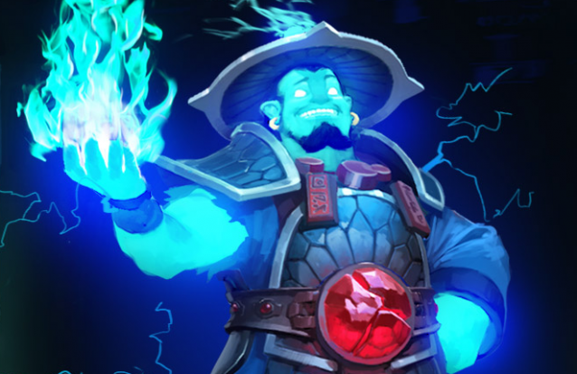

Welcome To The First Website. I am learning CSS now
I am using This to view My second header
Hello
This Text Is in Italics
Bryant was born in Philadelphia, Pennsylvania, as the youngest of three children and the only son of Joe Bryant and Pamela Cox Bryant.[3] He is also the maternal nephew of basketball player John "Chubby" Cox. His parents named him after the famous beef of Kobe, Japan, which they saw on a restaurant menu.[3] His middle name, Bean, is derived from his father's nickname "Jellybean". Bryant was raised Roman Catholic.[4] When Bryant was six, his father left the NBA and moved his family to Rieti in Italy to continue playing professional basketball.[5][6] Bryant became accustomed to his new lifestyle and learned to speak fluent Italian.[6][7] During summers, he would come back to the United States to play in a basketball summer league.[8]
Bryant was born in Philadelphia, Pennsylvania, as the youngest of three children and the only son of Joe Bryant and Pamela Cox Bryant.[3] He is also the maternal nephew of basketball player John "Chubby" Cox. His parents named him after the famous beef of Kobe, Japan, which they saw on a restaurant menu.[3] His middle name, Bean, is derived from his father's nickname "Jellybean". Bryant was raised Roman Catholic.[4] When Bryant was six, his father left the NBA and moved his family to Rieti in Italy to continue playing professional basketball.[5][6] Bryant became accustomed to his new lifestyle and learned to speak fluent Italian.[6][7] During summers, he would come back to the United States to play in a basketball summer league.[8]